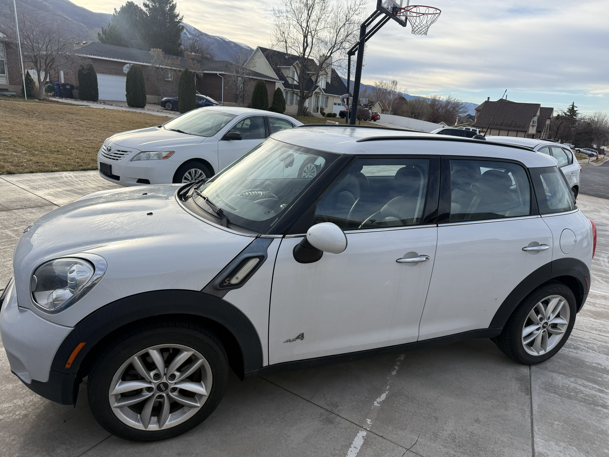
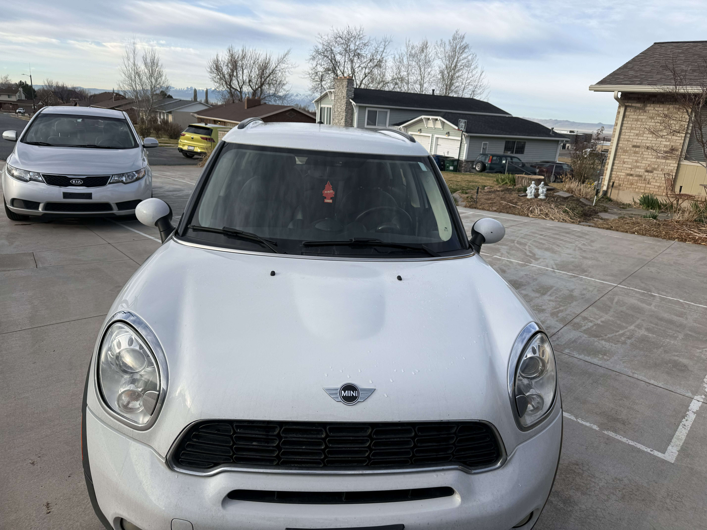
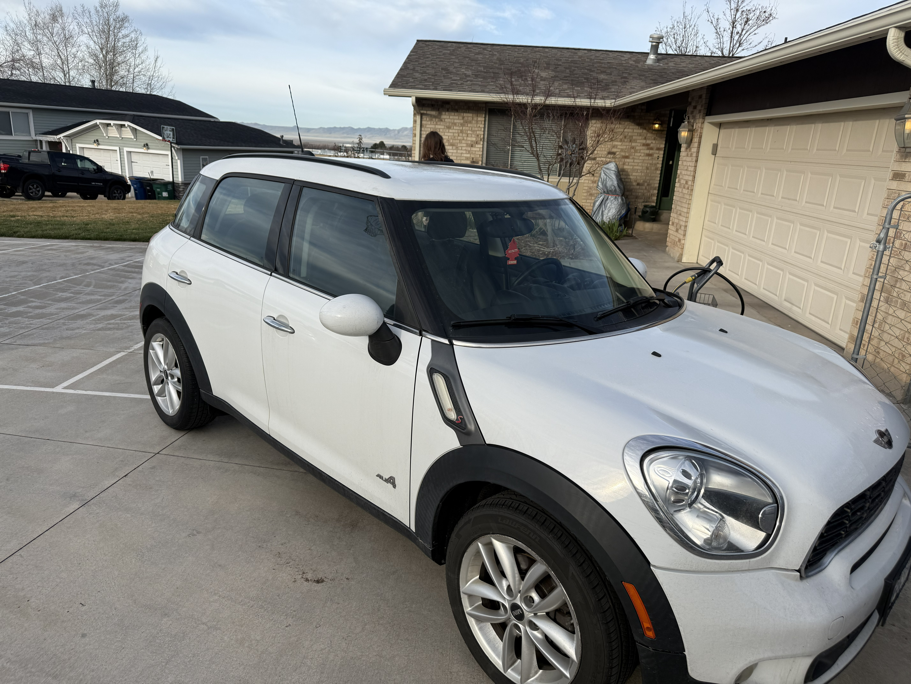
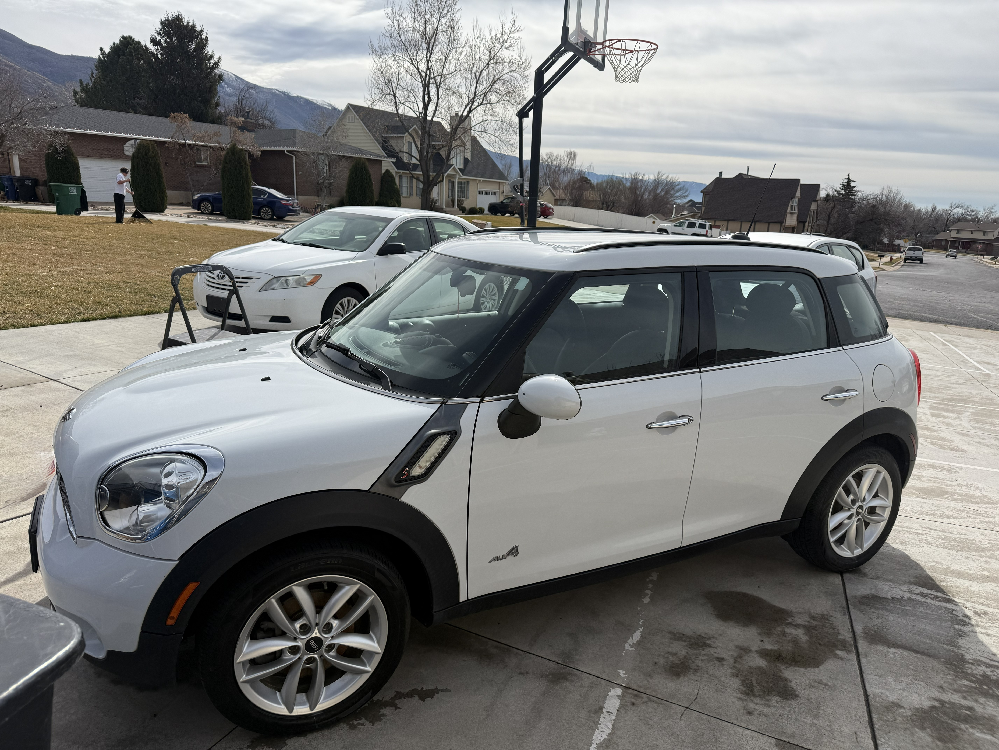
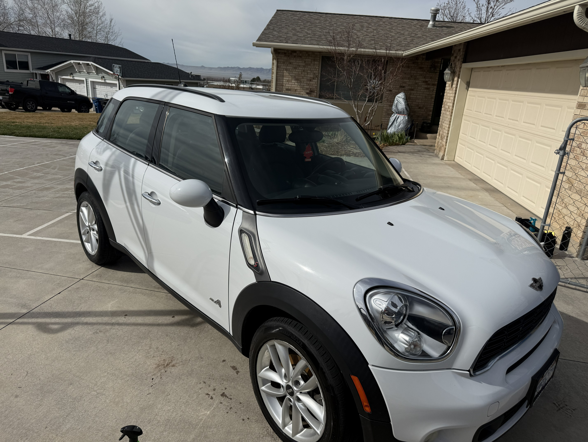
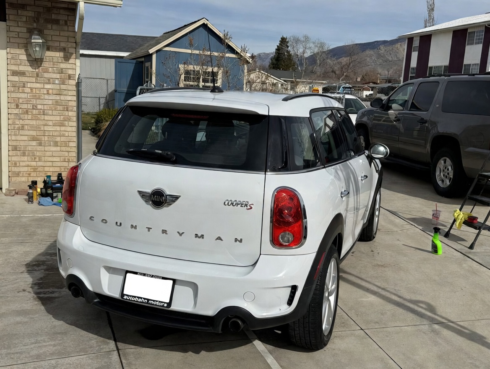
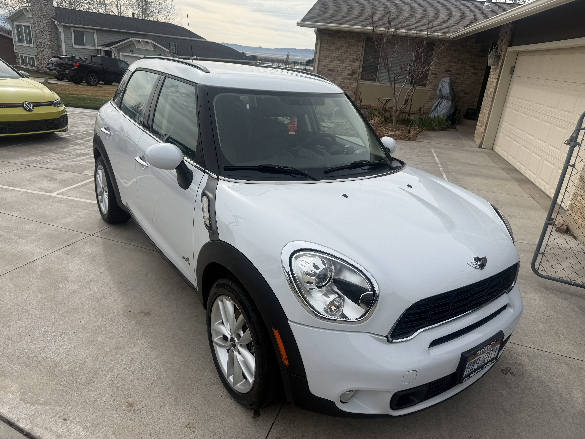
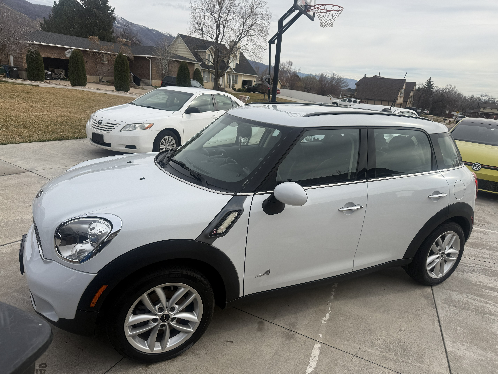

Ceramic Guard Pro (3-Year)
Professional-grade, long-term shield — transforms your vehicle into a durable, high-gloss fortress.
Book This ServiceThe Ceramic Guard Pro (3-Year) is your professional-grade, long-term shield that transforms your vehicle's exterior into a durable, high-gloss fortress—designed for Salt Lake City owners who want years of effortless protection against intense UV sun, harsh winter salt, road grime, acid rain, bird droppings, and everyday contaminants.
This premium service applies the ultra-premium CLEAN. Ceramic Coating (3-Year) by Pan The Organizer (30ml bottle), a high-solids SiO₂-based formula that delivers exceptional durability, extreme chemical resistance, and a deep, jetting gloss without harmful PFAS "forever chemicals"—making it safer for you, the environment, and your paint.
What’s Included
- Full Decontamination & Prep — Comprehensive fallout removal with P&S Iron Buster 16 oz and Crystal Wash 1 Gal, clay bar treatment (Griot's Garage Brilliant Finish Synthetic Detailing Clay), bug/tar dissolution (Stoner Bug and Tar remover).
- Paint Correction (if needed) — Light to moderate polishing to remove swirls/oxidation for optimal coating adhesion (multi-stage if required).
- Ceramic Coating Application — Expert application of CLEAN. 3-Year SiO₂ coating — high film thickness, flexibility, and real-world resilience.
- Final Inspection & Cure — Leveling, buffing, and post-application inspection for a flawless, hydrophobic finish.
Duration: Full day (~12 hours)
Primarily scheduled on Saturdays. Includes 3-year durability with proper maintenance (regular pH-neutral washes recommended).
Real Results – Full Transformation Journey
See the complete process on this Mini Cooper Countryman: pre-wash condition → post-wash clean → final 3-year ceramic coating results.







